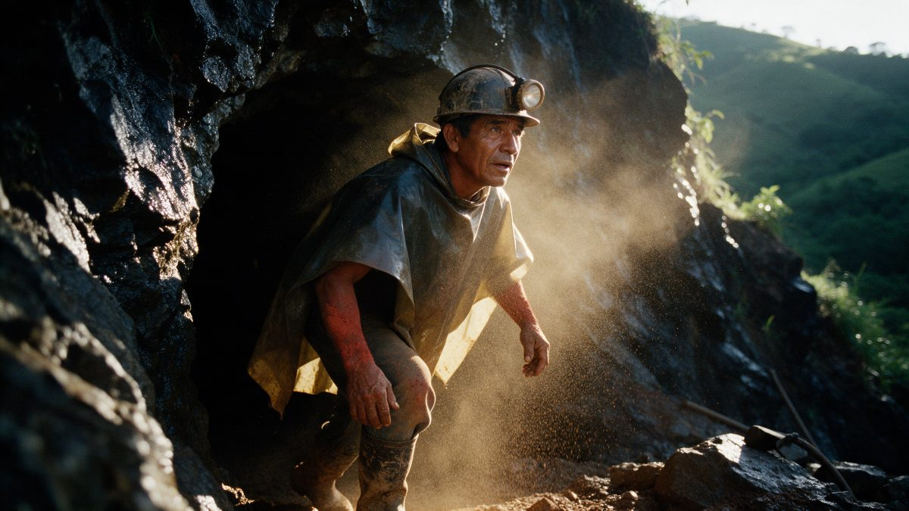
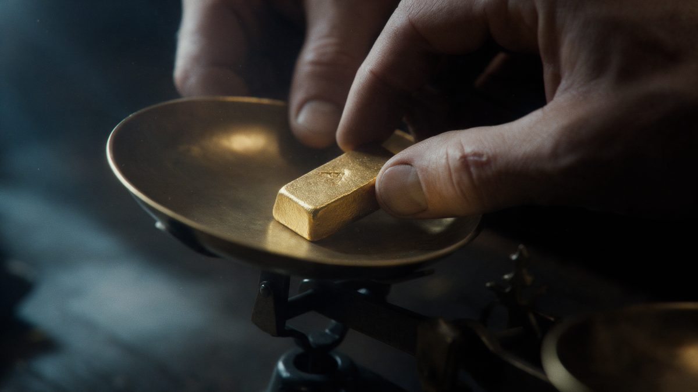
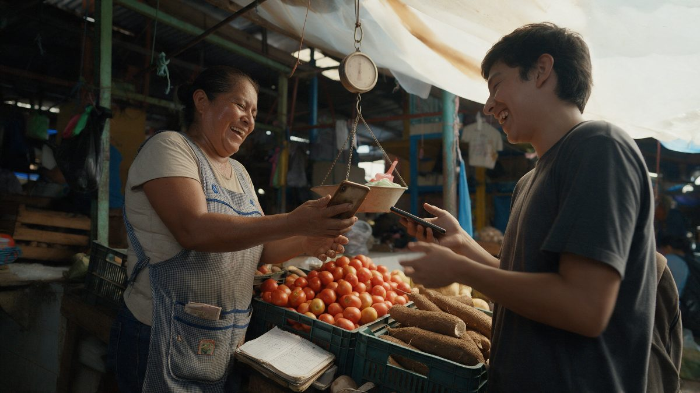
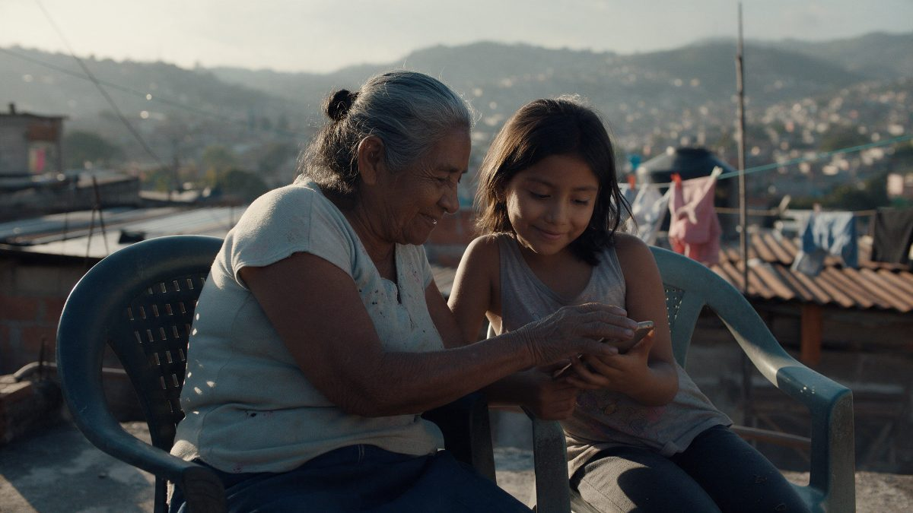
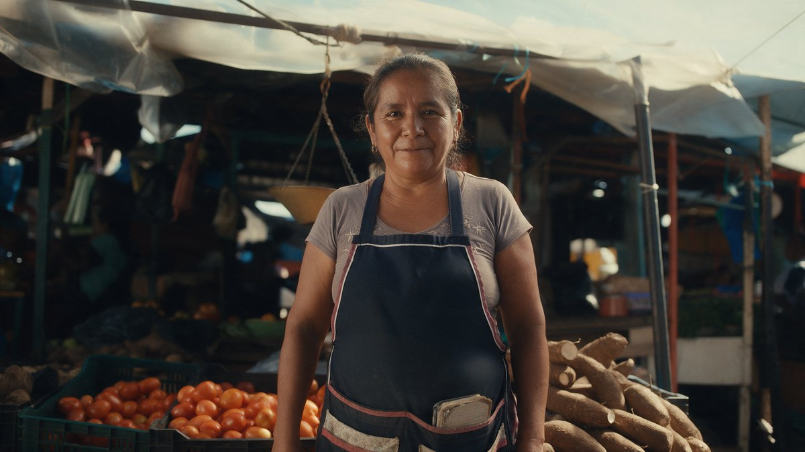
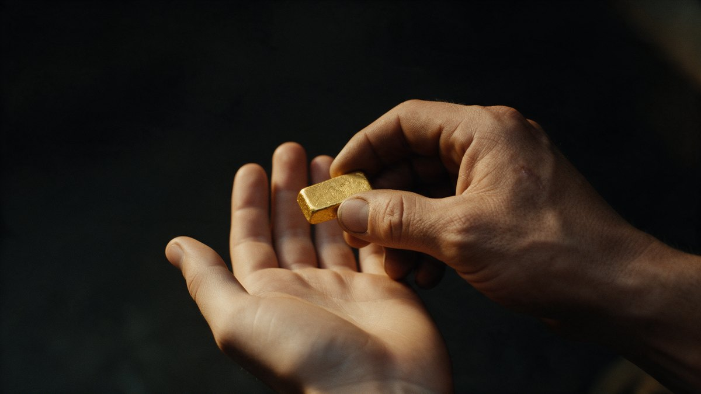

Cuatro eras de internet prometieron y fallaron. La quinta no es una palabra nueva: es un gramo de oro partido en cincuenta y cinco, en el bolsillo de cualquiera. Concepto, guion completo, dirección de arte, storyboard y plan de producción.
La regla de la casa, escrita por el propio cliente en la producción anterior, es «no me des prompt solo la historia para decidir». Así que este documento se lee en un orden: primero la idea, después la historia contada en prosa, y solo al final el guion técnico y los prompts. Lo que la junta aprueba es la historia; lo demás es ejecución.
Se piden cuatro decisiones y nada más:
Palabras del fundador: «sería web 1 como era, web 2 como ha sido, cómo nos roban información, web 3 que se llenó de scams, y web 5 que murió; el sistema está mal y se debe crear algo para tener balance o hacer algo diferente. Gente real. Que inspire. Que muestre que hemos creado algo nuevo para todos.»
Eso es, en realidad, una estructura de cinco actos ya resuelta, y es buena: cuatro promesas rotas y una alternativa. El trabajo creativo no consiste en cambiarla sino en encontrar cómo se cuenta sin que parezca una clase de historia, y sobre todo en que la quinta parte no suene a la quinta promesa.
Se escribieron seis conceptos distintos para este encargo y se juzgaron a ciegas desde tres lados: un director de cine, un estratega de marca y una persona del público al que va dirigido —alguien que ya perdió dinero en una aplicación—. Los tres eligieron el mismo, y por unanimidad: 9, 10 y 9 puntos sobre diez. Se llama El peso.
La idea entera cabe en una observación del idioma que estaba ahí desde siempre y que nadie usó: en español el dinero se llamó «peso» porque se pesaba. De ahí sale todo. La pieza no discute con nadie ni acusa a nadie: pesa. Las cuatro eras de internet no se cuentan con gráficas, ni con cubos flotando, ni con una voz de documental; se cuentan con manos, con caras y con una balanza de mercado de dos platos que aparece cinco veces. En las cuatro eras, el plato no se mueve. Al final, el fiel entra al centro y se queda.
La palabra que pidió el fundador —balance— no se pronuncia nunca en la pieza. Se ve.
La voz no es de un locutor. Es la de Doña Blanca, vendedora de verduras del Mercado Zonal Belén de Tegucigalpa, 62 años, que no es actriz: la narración completa es suya, con su acento, su respiración y sus pausas. Que la historia de las cuatro eras la cuente una señora que pesa cosas todos los días para vivir es lo que hace que la pieza no suene a comercial. Es, literalmente, la autoridad moral del argumento.
Lo que separa una pieza premium de una cara es que la premium tiene reglas y las cumple hasta cuando duele. Estas son tres y un objeto. El espectador no las va a notar; las va a sentir.
Una balanza de mercado de dos platos, de latón golpeado, es el único elemento que atraviesa las cuatro eras. Aparece cinco veces y cada vez dice algo sin hablar: al arranque pesa un grano de oro y el fiel se mueve; en 2008 alguien deja caer una fotocopia de cédula en el plato y el plato no se mueve; en 2017 el plato se voltea solo y queda colgando vacío; en 2022 los dos platos están vacíos y quietos cuatro segundos sin corte; al final el fiel entra al centro y se queda ahí.
Sesenta y nueve segundos sin una sola interfaz. Los monitores y los teléfonos existen solo como luz sobre una cara, como reflejo en un ojo, como un pulgar tocando un vidrio del que nunca vemos el contenido. La primera pantalla de la pieza aparece en el último tercio, y aparece en la misma mano que acaba de sostener el oro.
Durante las cuatro eras, la persona y lo que hace con su dinero están siempre en planos distintos: manos solas, caras solas, corte, corte, corte. Es el montaje de algo partido. En el bloque 8, por primera vez en toda la pieza, una mano y una cara entran juntas al mismo encuadre —Doña Blanca cobrando al lado de su pesa— y el espectador siente que algo se reunió sin saber por qué. Ese plano vale más que cualquier diagrama de arquitectura.
1998: una sola fuente fuera de cuadro y un foco de 40 W. 2008: fluorescente cenital, plano, sin sombra propia —nadie proyecta sombra, nadie deja huella—. 2017: contraluz duro de calle, la cara mitad en negro. 2022: día nublado sin dirección. Último tercio: luz de ventana real y hora dorada de verdad, boca de socavón a las cinco de la tarde. Ese cambio de luz es el argumento; no hace falta decirlo.
Noventa segundos, diez bloques. La columna de la derecha dice qué se oye, porque en esta pieza el sonido carga la mitad del peso: el módem de 1998 completo sin recortar, el audio que se rompe a mitad de palabra en 2017, y cinco segundos de silencio absoluto en el minuto 0:53 que son el momento más caro del comercial y no se llenan con nada.
| Bloque | Qué se ve | Qué se oye |
|---|---|---|
| 1 · Peso 0:00–0:07 |
Negro. Una balanza de latón sobre madera. Macro: un pulgar con callo pone un grano de oro del tamaño de un grano de arroz en el plato izquierdo. El plato baja. Corte a negro cuando se detiene. Cartel: «1 gramo». | Silencio de cuarto real, el tintineo del latón y una sola nota de contrabajo que queda sonando. Voz 1 y 2. |
| 2 · 1998 0:07–0:18 |
Hi8 de verdad, cuadro 4:3 con negros a los lados. Manos de niño en un teclado beige. Su cara de perfil con un resplandor verdoso de fuera de cuadro. Una mano de mujer desenrolla el cable del teléfono. Al niño se le abre la boca. Cartel: «1998». | Módem de 56k completo, ocho segundos sin recortar. Ventilador de fuente de poder. Una guitarra sola, tres notas. Voz 3. |
| 3 · 2008 0:18–0:31 |
Digital limpio y frío. Un pulgar toca vidrio; vemos el pulgar y el reflejo, jamás el contenido. Una mano firma un renglón. Una mano entrega una cédula y queda vacía. Caras con luz azul corriéndoles encima, sin expresión. Alguien deja caer una fotocopia en el plato y el plato no se mueve. Cartel: «2008». | Aire acondicionado. Clics secos. Un pulso electrónico estéril, como monitor de hospital. La nota del contrabajo desaparece. Voz 4 y 5. |
| 4 · 2017 0:31–0:44 |
Contraluz de lámpara de sodio, negro y naranja. Manos de un muchacho de 26 contando billetes con humedad de bolsillo. Las mismas manos vacías, abriéndose y cerrándose. Su cara, mitad en negro, mirando al piso. El plato se voltea solo. Cartel: «2017». | Calle de noche, un perro, una moto. El sonido se satura y se corta a mitad de palabra, como un audio de WhatsApp roto. Dos segundos de silencio. Voz 6 y 7. |
| 5 · 2022 0:44–0:53 |
Gris plano. Una mano borra con un trapo unas palabras de un vidrio empañado. Una mano apila volantes en un rincón. Una señora guarda su cuaderno de fiados y voltea el letrero de la pulpería. Tres caras quietas, respirando, esperando algo que no llega. Cartel: «2022». | Lluvia fina en lámina. Tubo fluorescente. La música baja a una nota que se desafina y se apaga. Voz 8. |
| 6 · La balanza vacía 0:53–0:58 |
Los dos platos, vacíos, absolutamente quietos. Cuatro segundos sin corte. El cuadro empieza a ensancharse muy despacio. | Silencio real. Nada. A los cuatro segundos, la voz 9 sin música debajo. |
| 7 · Honduras 0:58–1:09 |
35 mm, hora dorada. Manos con guantes rotos en roca mojada. Boca de socavón en Danlí: un minero sale y se quita el casco —primera cara con sol de toda la pieza—. Polvo de roca cayendo en la palma. Guante blanco colocando un lingote en una balanza de precisión. Un hombre de camisa arremangada pasa la mano por la misma piedra. Cartel: «Danlí · Choluteca · Honduras». | Vuelve el mundo: picos, agua goteando, respiración, chicharras. Un golpe de cuerda grave y, por primera vez, voces humanas cantando sin letra, lejos. Voz 10, 11 y 12. |
| 8 · Un gramo entre 55 1:09–1:20 |
Se rompen las dos reglas a la vez. Macro: una pinza divide una línea de oro en partes iguales; cartel «1 g ÷ 55». Doña Blanca, cara y manos en el mismo cuadro por primera vez, cobra con el teléfono junto a la pesa de las verduras. La señora de la pulpería cobra y deja el cuaderno abierto al lado, no en la basura. El muchacho de 2017 vuelve, de día, y se verifica: su nombre, una sola vez. Una ingeniera apoya la mano en un rack tibio. | La percusión son las manos: el golpe de la pesa, el sello de hule, el timbre del cobro, monedas, pasos de mercado. Cuerdas que suben sin épica de tráiler. Voces reales del mercado sin doblar. Voz 13, 14 y 15. |
| 9 · Coro de manos 1:20–1:27 |
Siete planos de un segundo, el mismo lente y la misma composición exacta —mano abierta hacia arriba con el teléfono, cara detrás—, cambiando piel, edad, ropa y fondo: Tegucigalpa, San Pedro Sula, Bogotá, São Paulo, Lima, San José, Ciudad de México. En el séptimo la mano se cierra. Corte al fiel entrando al centro y quedándose. | Las siete voces dicen cada una su ciudad, encimadas, casi inaudibles. Las cuerdas resuelven en la misma nota del arranque, ahora afinada. Voz 16. |
| 10 · Remate 1:27–1:30 |
Negro. Cartel centrado y estático: «Dinero que pesa.» Debajo, pequeño, el logo y «Hecho en Honduras. Para toda Latinoamérica.» Aviso legal cuatro segundos en el último cuadro sostenido. | El tintineo del latón del primer plano, una sola vez. La voz susurra las líneas 17 y 18 casi sin aire. Corte a silencio, sin cola musical. |
Esto es todo el texto hablado del comercial. Está escrito para una señora de sesenta y dos años del mercado, no para un locutor: frases cortas, sin subordinadas, sin una sola palabra que ella no diría. Se graba en su puesto o en un cuarto con eco natural, nunca en cabina limpia, y se permite que respire y se equivoque.
documentos-junta/recursos/voz/. Son voz sintética de referencia —una lectura
pausada de 59 segundos y una alterna de 62— y sirven para tres cosas: aprobar el texto oyéndolo, medir los
tiempos reales de cada bloque antes de rodar, y darle a Doña Blanca una guía de ritmo el día de la grabación.
No son la voz final. La voz final es la de ella, grabada en su puesto.
La línea 9 —«El sistema no se rompió. Es que nunca tuvo balanza.»— es la bisagra de la pieza y la única que se dice sin música debajo. Es también la respuesta exacta a lo que pidió el fundador: el sistema está mal y hace falta balance. Dicho así, no acusa a nadie y no se puede discutir.
Ocho personas, ninguna actriz profesional, todas de Honduras salvo una. Se eligen por lo que ya son, no por lo que puedan interpretar. Ninguna es salvada por una aplicación: Doña Blanca sigue pesando tomates y Doña Chepa se queda con su cuaderno. Esa es la diferencia entre retratar a alguien y usarlo de decorado.
| Quién | Qué hace en la pieza | Por qué está |
|---|---|---|
| Doña Blanca, 62 vendedora de verduras y la voz de todo |
Pesa tomates a las seis de la mañana. En el último tercio cobra desde el mismo teléfono con el que le manda audios a su hija, junto a la pesa de toda la vida. | En su puesto, pesar algo para saber cuánto vale es lo más normal del mundo. Es el puente entre el oro y la gente, y la autoridad moral del argumento. |
| Don Reynaldo, 47 minero de la concesión |
Sale del socavón a las cinco, se quita el casco y le da el sol en la cara: la primera cara iluminada por el sol en toda la pieza. | Sin él, «respaldado en oro» es una frase de folleto. Es la prueba física de que detrás del token hay un cuerpo, un turno y una montaña. |
| Kevin, 26 sobrino de Doña Blanca |
Único que aparece en dos eras: en 2017 cuenta billetes y los entrega; en el último tercio vuelve, de día, y se verifica con su nombre una sola vez. | Le da a la parte oscura una cara con nombre y cierra el círculo sin que nadie lo explique. La reparación se siente en el cuerpo, no en el argumento. |
| Doña Chepa, 71 pulpería y cuaderno de fiados |
En 2022 guarda el cuaderno y voltea el letrero. Al final cobra con el teléfono y deja el cuaderno abierto al lado, no en la basura. | Evita el mensaje arrogante de «lo viejo no sirve». Su cuaderno fue el primer libro contable del barrio. Es el gesto que más se va a compartir. |
| Josué, 16 primer teléfono propio |
Sostiene el teléfono con las dos manos, como se sostiene algo que pesa. Su nombre verificado aparece una vez y sonríe de lado. | Encarna el gramo partido en cincuenta y cinco: no hace falta ser rico para tener oro. Y a él nadie le va a robar el primer ahorro de su vida. |
| Karla, 29 ingeniera de la cadena |
Apoya la palma en un rack tibio y la deja ahí un segundo, como se toca un animal. No teclea: escucha. | La tecnología entra a la pieza por el tacto, no por la interfaz. Y pone a una hondureña joven donde el comercial promedio pondría a un extranjero de camisa negra. |
| Yenifer, 34 madre venezolana en Bogotá |
Ver la sección 9: esta escena se rueda de otra manera o no se rueda. | Era la prueba de que el sistema cruza fronteras, y es la única escena del guion que choca con lo que el producto puede sostener hoy. |
| Un hombre de camisa arremangada sin presentación y sin línea |
Pasa la mano sobre la misma roca donde el minero apoyó la suya. Aparece dos segundos y no se le vuelve a ver. | Es el fundador, y entra como una mano más entre las otras. Si se presenta con nombre y cargo en pantalla, la pieza se vuelve un video corporativo; así, se vuelve creíble. Su nombre y el de los cofundadores van en letra chica, al final. |
Estos diez fotogramas no son ilustraciones de apoyo: son la pieza resumida. Se generaron a 2048×1152 con el mismo sistema con el que se producirán las tomas, y sirven para tres cosas: aprobar el tono antes de gastar un día de rodaje, entregarle al director de fotografía una referencia de luz que no admite discusión, y funcionar como referencias normalizadas para la generación de video si se toma el camino A.
Obsérvese lo que tienen en común las cuatro primeras y lo que cambia en las cuatro últimas: en las eras de internet la luz es artificial, fría y de una sola fuente —un monitor, un teléfono, un foco pelado, una mañana gris—; en la parte de Orden Global la luz es natural y viene de atrás. No es una metáfora explicada en el guion: es una regla de fotografía que el espectador siente sin nombrarla.








documentos-junta/recursos/storyboard/, en JPEG de 2048×1152 y en versión
reducida para pantalla. Si se toma el camino generado, se adjuntan como referencia de cada toma. Si se rueda, se imprimen y
se llevan al set: son la conversación con el director de fotografía, ya resuelta.
Un principio rector, y de él sale todo lo demás: la cámara vive a la altura de las manos, entre cincuenta y noventa centímetros del suelo. Nada de drones, nada de cámara rápida, nada de gráficos flotando. Todo lo que se ve existe y se puede tocar.
| Era | Paleta | Luz |
|---|---|---|
| 1998 | Beige de plástico viejo, verde fósforo de tubo, café de mueble de madera. Cálido pero sucio. | Una sola fuente fuera de cuadro —el monitor que nunca vemos— y un foco de 40 W. |
| 2008 | Blanco clínico, azul de pantalla que nadie ve, gris de oficina. Piel sin sangre. | Fluorescente cenital, plano, sin sombra propia: nadie proyecta sombra, nadie deja huella. |
| 2017 | Negro y naranja de lámpara de sodio. Único color saturado de toda la pieza, y es el del engaño. | Contraluz duro de calle, la cara mitad en negro. |
| 2022 | Gris plano, cero contraste, cero color. La imagen se ve agotada, como la gente. | Día nublado sin dirección. |
| Orden Global | Oro 24k, negro profundo, verde de cerro hondureño, terracota de Tegucigalpa. Primera vez que hay rojo en la piel. | Luz de ventana real y hora dorada de verdad: mercado de 9 a 10 de la mañana, socavón a las 5 de la tarde. Rebote en tela blanca y nada más. |
Regla dura: las cuatro eras se abren progresivamente —40 mm, 32 mm, 25 mm, 21 mm—, de modo que cada era se aleja un poco más de la persona. El último tercio se rueda entero con un solo lente de 50 mm, el del ojo humano, a T2.8, en mano suave, sin zoom y sin estabilizador. El espectador no lo va a saber; lo va a sentir.
Base de cámara digital de rango alto con ópticas antiguas. 1998 se rueda de verdad en Hi8 o MiniDV y se telecina —no se le pone un filtro encima—. 2008 es digital limpio y feo a propósito, con nitidez de cámara de vigilancia. 2017 lleva compresión real: el archivo se comprime y se descomprime hasta que aparecen los bloques. 2022 es digital plano, sin corrección. El último tercio lleva grano de 35 mm escaneado, halación suave en el oro y cero corrección de piel: poros, callos, cicatrices y uñas de trabajo.
Máster vertical 9:16. La imagen empieza encajonada en un 4:3 con negros a los lados y se va ensanchando era por era, hasta llenar el cuadro vertical completo, borde a borde, justo cuando aparece el oro. El espectador siente el alivio antes de entenderlo. La versión de sala, en 2.39:1, hace el mismo movimiento con barras.
Dos usos y ninguno más. Uno: los años y los pesos, en monoespaciada de aguja de balanza, blanco al 60 % sobre negro, abajo a la izquierda, pequeños y sin animación: «1998», «2008», «2017», «2022», «1 g ÷ 55», «Danlí · Choluteca · Honduras», «23 países». La pieza rotula pesos, no conceptos. Dos: el cierre, en la serif de la marca, centrado, estático, sin brillo ni barrido: «Dinero que pesa.»
Nada de sintetizadores de cripto, nada de arpegios, nada de bombo en cuatro por cuatro. La instrumentación es un contrabajo —el peso—, una guitarra de nylon tocada con uña, una marimba grave usada solo como campana (una nota por era), dos violas y un cello, y un coro real: doce voces de un colegio de Tegucigalpa y tres señoras que cantan en iglesia, grabadas en un cuarto con eco natural, sin afinación digital, vocalizando sin letra. No hay batería programada: la percusión del último tercio son sonidos de trabajo grabados y tocados como instrumento —el golpe de la pesa de latón, el sello de hule de la pulpería, monedas, el timbre del cobro, palmas de mercado—.
| Movimiento | Qué hace |
|---|---|
| 0:00–0:07 | Una sola nota de contrabajo con toda su cola. El tema entero nace de ahí. |
| 0:07–0:18 | La guitarra sola, tres notas, imperfecta, con el ruido del módem haciendo de ritmo involuntario. |
| 0:18–0:44 | La música se deshumaniza: pulso electrónico estéril sin bombo, después saturación y compresión hasta cortarse a mitad de compás. La armonía nunca resuelve. |
| 0:44–0:58 | Muerte del tema: una nota que se desafina, se apaga, y cinco segundos de silencio absoluto sobre la balanza vacía. |
| 0:58–1:30 | Resurrección por acumulación: golpe de cuerda grave, el coro entrando de lejos y acercándose, las manos como percusión, y el cierre en la misma nota del arranque, ahora afinada. |
Cero actores y cero banco de imágenes: gente que ya hace eso todos los días, filmada haciéndolo. Nadie mira a cámara hasta el último tercio; cuando por fin miran, no sonríen de comercial: sostienen la mirada dos segundos y siguen trabajando. Ropa propia, nada de vestuario, manicura prohibida.
Un comercial financiero se juzga por lo que promete, y lo que promete compromete a la empresa. Esta lista es vinculante: si una frase del guion final la contradice, la frase se cambia, no la lista.
| No se dice | Por qué |
|---|---|
| «Tu dinero crece», «rendimiento», «inversión segura», cualquier cifra de retorno | Convierte la pieza en oferta de valores. ORIGEN es dinero respaldado en metal, no una promesa de ganancia. |
| «Banco», «cuenta bancaria», «depósitos asegurados» | Orden Global no es banco ni está regulada como banco. Decirlo sería falso y además regulable. |
| «Mandá remesas» como servicio vivo | Las remesas necesitan licencia por país. Hasta tenerla, en el producto son una calculadora y en el comercial no existen. |
| Cifras de onzas en bóveda, reservas o respaldo total | No hay auditoría publicable. Se puede decir cuánto vale un ORIGEN, que es una definición, no una cifra de tesorería. |
| Licencias de la zona de Roatán, autorizaciones o cualquier aval regulatorio | No se han obtenido. Mencionarlas mezcla a Orden Global con un litigio que no es suyo. |
| Nombres, marcas o logotipos de bancos y billeteras reales | OrdenExchange trabaja con ellos como destino de pago, no como socios. Usar sus marcas sugiere una alianza inexistente. |
| Comparaciones directas con una criptomoneda o empresa nombrada | Invita respuesta legal y, peor, mete a la marca en la misma categoría de la que intenta salir. |
Y lo que sí se puede decir, porque el producto lo sostiene hoy: que un ORIGEN es un cincuentaicincoavo de gramo de oro en bóveda; que el respaldo sale de concesiones propias en Danlí y Choluteca; que la red es propia y mover ORIGEN en ella no cuesta comisión de red; que se compra y se vende entre personas en veintitrés países con los bancos y billeteras que cada quien ya usa; que mientras el dinero viaja el activo queda en custodia y que si algo falla lo resuelve un operador; y que para operar hay que estar verificado con Genesis ID.
La revisión del sistema que acompaña a este documento (Documento 8) se hizo, entre otras cosas, para esto: para saber qué se puede filmar sin mentir. Tres momentos del guion chocan con lo que el producto puede sostener hoy. No son errores del guion; son decisiones de producto que hay que tomar antes de rodar.
| La toma | El problema | Qué se hace |
|---|---|---|
| El cobro con QR bloque 8 · Doña Blanca y Doña Chepa |
Las pantallas de cobro de MyTokenPay todavía no mueven dinero: el pago no toca la cadena ni un banco. Filmar un cobro que no existe es exactamente lo que hicieron las cuatro eras. | Dos caminos. El bueno: entregar el cobro real antes del rodaje —está en el plan de noventa días—. El seguro: filmar el mismo gesto como lo que sí funciona hoy, una operación entre dos personas en la casa de cambio, con el dinero llegando al banco de ella. |
| La remesa de Bogotá a Maracaibo bloque 8 · Yenifer |
Las remesas necesitan licencia por país; hoy son una calculadora. Una toma de alguien «mandando dinero» a otro país es una afirmación regulatoria, no una imagen. | Se cambia la acción, se conserva la emoción. Yenifer no manda: vende y compra en su propio país, con su propio banco, y la cara de su mamá aparece en una videollamada, no como destinataria de un envío. Ni la voz ni el cartel dicen «remesa», «envío» ni «recibe». |
| El cartel «23 países» bloque 9 |
La casa de cambio existe y está probada para veintitrés países, pero hoy no está desplegada: su dirección contesta 404. | El cartel se gana desplegando. Es un despliegue, no un desarrollo. Mientras no esté en línea, el cartel se cambia por «Hecho en Honduras» y la pieza pierde su mejor remate geográfico por nada. |
Orden Global ya tiene un sistema de producción de video probado, documentado en el Documento 7 · Manual de producción de video, con el que se hicieron los dos comerciales anteriores. Esta pieza se produce con el mismo sistema. Lo que sigue no es una propuesta: es el método que ya funciona, aplicado a este guion.
El modelo genera fotografía; el contador, los rótulos, los nombres, el monograma y los avisos legales los dibuja Remotion encima del clip. Así una corrección de texto cuesta un render de tres minutos y no una generación nueva. Es el principio del que cuelgan todos los demás.
A un modelo de video no se le describe un logotipo ni una persona: se le entrega. Para la producción anterior se prepararon once referencias de 1440×1440 con el mismo encuadre, fondo y luz. Para esta pieza hay que preparar una referencia por personaje —la vendedora, el minero, la abuela y la nieta, el muchacho— y adjuntarla en todas las tomas donde esa persona aparece. Sin eso, la misma señora cambia de cara entre plano y plano y el comercial se cae.
Tiempos, textos, colores y marcas de audio viven en src/guion.ts. Ningún otro archivo lleva un
número escrito a mano. Se cambia un valor, se vuelve a renderizar y sale idéntico salvo por ese cambio. En el
anexo de este documento va el guion.ts de esta pieza, listo para pegar.
Corrección textual del cliente en la producción pasada: «no se queda el ramo flores paradas cuando no se puede». Desde entonces cada prompt lleva reglas de física explícitas: la gravedad, el peso del mineral en la mano, el papel que se arruga y se queda arrugado. Una toma físicamente imposible destruye la credibilidad de todo lo demás, por bonita que se vea. En esta pieza la regla es doble, porque el peso es el argumento.
El formato principal es 1080×1920. Las plataformas tapan el 25 % inferior con la descripción y el borde derecho con sus botones: los rótulos van al 62 % de altura y nada importante toca los bordes.
| Etapa | Herramienta | Qué produce |
|---|---|---|
| Referencias | Seedream (imagen) | Una imagen por personaje y por logotipo, 1440×1440, encuadre idéntico |
| Tomas | Seedance (video) con las referencias adjuntas | Los planos crudos, sin texto ni marca |
| Voz | ElevenLabs, voz masculina latinoamericana | La narración en español, con las pausas marcadas |
| Sonido | Síntesis propia en numpy | Los golpes, el silencio y la nota grave del cierre |
| Montaje | Remotion 4 · React · 1080×1920 a 24 fps | Rótulos, monograma, avisos, mezcla y render |
| Render | Remotion Lambda | Menos de cinco centavos por render, sin servidor encendido |
Dos caminos, y conviene decidirlos a la vez porque no son excluyentes: el camino generado sirve para aprobar y publicar rápido; el camino rodado da la pieza que se va a usar un año. La recomendación es hacer el generado primero como animática aprobada, y rodar con esa animática ya bendecida en la mano.
| Semana | Qué pasa | Quién decide |
|---|---|---|
| 0 | Ver juntos el video de referencia. Aprobar la historia y el remate. | Fundador y junta |
| 1 | Animática generada con voz y sonido. Se aprueba el ritmo, no la belleza. | Fundador |
| 2 | Casting real, permisos de la mina y del mercado, scouting en Tegucigalpa y Danlí. | Producción |
| 3 | Rodaje: un día en la mina, un día en Tegucigalpa, medio día de detalles y metal. | Dirección |
| 4 | Montaje en Remotion, música, mezcla, versiones de 30 s y vertical, avisos legales. | Posproducción |
| 5 | Salida: vertical en redes, 30 s en pauta, 90 s en el sitio y en presentaciones. | Mercadeo |
| Versión | Formato | Dónde | Qué cambia |
|---|---|---|---|
| Larga · 90 s | 16:9 | Sitio, presentaciones a junta e inversionistas, pantallas de evento | La pieza completa, con las cuatro eras desarrolladas |
| Corta · 30 s | 16:9 y 1:1 | Pauta en redes y televisión regional | Las eras se resumen en un solo bloque; empieza casi en el quiebre |
| Vertical · 45 s | 9:16 | TikTok, Reels, Shorts | Los primeros tres segundos son el gancho, no el contexto; rótulos al 62 % de altura |
| Retrato · 15 s ×4 | 9:16 | Secuencia de anuncios | Una persona real por pieza: la vendedora, el minero, la abuela, el muchacho |
Las cuatro salen del mismo material y del mismo guion.ts. No se rueda material aparte para redes:
se rueda pensando en que el plano tiene que funcionar recortado a vertical, con la acción en el tercio central.
| Qué | Para qué | Quién lo tiene |
|---|---|---|
| El video de referencia, visto en conjunto | Entender el mecanismo que le gustó, no la apariencia | El fundador |
| Permiso de filmación en una de las concesiones | El plano de la mina es el que sostiene todo el argumento | Operación minera |
| Acceso a la bóveda o a metal certificado para el plano de la balanza | Es el plano firma de la pieza | Orden Global |
| Logotipos en alta resolución, incluido AGKA | El actual mide 447×431 px, insuficiente para referencia | Marca |
| Descripción real de AuCorp | Sigue siendo el único texto del ecosistema escrito por suposición | El fundador |
| Cesión de imagen firmada de cada persona que aparezca | Sin eso no se puede publicar ni pautar | Producción |